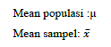
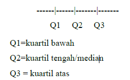
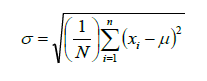
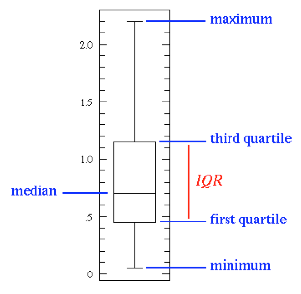
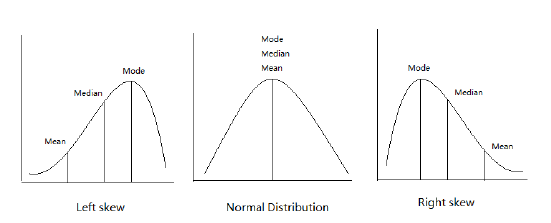

Analisis data eksplorasi merupakan metode statistik yang dapat digunakan untuk memeriksa data sehingga peneliti akan mengetahui kondisi data. Strategi dasar dari analisis data eksploratif sendiri dibedakan ke dalam 2 bentuk. Pertama dalam bentuk gambar yang terdiri dari garfik stem-leaf, histogram, dan lain-lain. Kedua, dengan menggunakan ringkasan numerik yang terdiri dari mean, median, kuartil, range, standard deviation, dan lain-lain.
Ringkasan numerik digunakan untuk mengetahui kondisi pemusatan dan persebaran data kuantitatif. Ringkasan tersebut diperlukan agar data menjadi lebih sederhana, mengetahui gambaran data serta sifat penting dari data tersebut.
Untuk mengetahui kondisi pemusatan nilai data, maka perlu menghitung :
Mean
Merupakan nilai rata-rata hitung dari keseluruhan nilai data yang dimiliki
Menggunakan data berkala rasio, seperti berat badan, umur, tekanan, dan sebagainya.
Dipengaruhi oleh nilai ekstrim.
Apabila observasi berubah, maka mean juga akan berubah.
Notasi:

Median
Merupakan nilai yang berada tepat di tengah suatu distribusi nilai data yang sudah diurutkan.
Dipengaruhi oleh jumlah observasi bukan nilai observasi.
Digunakan pada distribusi frekuensi miring.
Dapat digunakan untuk data kuantitatif atau kualitatif.
Modus
Merupakan nilai observasi yang sering muncul.
Tidak dipengaruhi oleh nilai ekstrim.
Digunakan pada data kualitatif maupun kuantitatif.
Unimodal artinya terdapat satu nilai modus dan bimodal artinya dua nilai modus.
Tidak semua data memiliki modus.
Sedangkan untuk mengetahui kondisi persebaran nilai data, maka perlu
menghitung :
Jarak /range (R)
R = Max-Min
Jarak antar kuartil/Inter-quartile range:
Kuartil membagi data (n) yang berurutan atas 4 bagian yang sama banyak.

Untuk data yang tidak dikelompokkan terlebih dahulu dicari mediannya, kemudian kuartil bawah dan kuartil atas.
Untuk data yang dikelompokkan rumusan kuartil identik dengan rumusan mencari median.
Jarak antar kuartil atau IQR (Inter Quartile Range) merupakan selisih antara Q3 dan Q1.
Standard Deviation (SD): “rata-rata” jarak nilai data terhadap mean

SD >= 0. (SD = 0 saat nilai data sama semua)
Memiliki unit pengukuran yang sama dengan data observasi
Dipengaruhi oleh nilai ekstrim
Ringkasan numerik biasanya disajikan dalam bentuk grafik box-plot yang pada umumnya menampilkan 5 ringkasan nilai, yaitu:
Nilai minimum
Kuartil I (Q1)
Median
Kuartil III (Q3)
Nilai maksimum.

Hubungan Mean, Median, dan Modus :
Mean pada umumnya dipilih untuk mengukur ukuran pemusatan, bila distribusi mendekati simetris maka data memiliki stabilitas yang besar dan digunakan sebagai dasar statistika selanjutnya.
Median paling tepat menggambarkan ukuran pemusatan bila distribusi menunjukkan keistimewaan. Saat menceng gunakan nilai median.
Modus biasanya digunakan untuk menafsirkan data serta mendapatkan gambaran besar dari data secara cepat dan waktu yang singkat.
Mean vs Median
Nilai mean dan median sama, jika distribusi nilai data berupa kurva yang setangkup/simetris
Mean dan median berbeda, jika distribusi nilai data menceng
Menceng kanan : mean lebih besar dari median
Menceng kiri: mean lebih kecil dari median

Mean ditarik oleh nilai ekstrim, namun tidak dengan median. Median lebih baik digunakan sebagai ukuran pusat data jika nilai datanya bervariasi
Hinges (Engsel)
Lower-Hinges (H1), merupakan median dari nilai minimum data s.d nilai median (identik dengan Q1)
Upper-Hinges (H2), merupakan median dari nilai median s.d nilai maksimum data ((identik dengan Q3)
*Note: Kecuali untuk data berjumlah genap, dimana median akan berada diantara 2 nilai
Nilai Ekstrim
Outliers atau pencilan merupakan nilai yang terletak jauh atau menyimpang dari kelompok utama dan penting untuk dapat mengidentifikasi mereka.
Kandidatnya adalah nilai minimum dan maksimum
IQR digunakan sebagai bagian dari aturan praktis untuk mengidentifikasi outlier.
Nilai data dianggap outlier rendah: setiap nilai < Q1 1,5IQR
Nilai data dianggap outlier tinggi: setiap nilai > Q3 + 1,5IQ